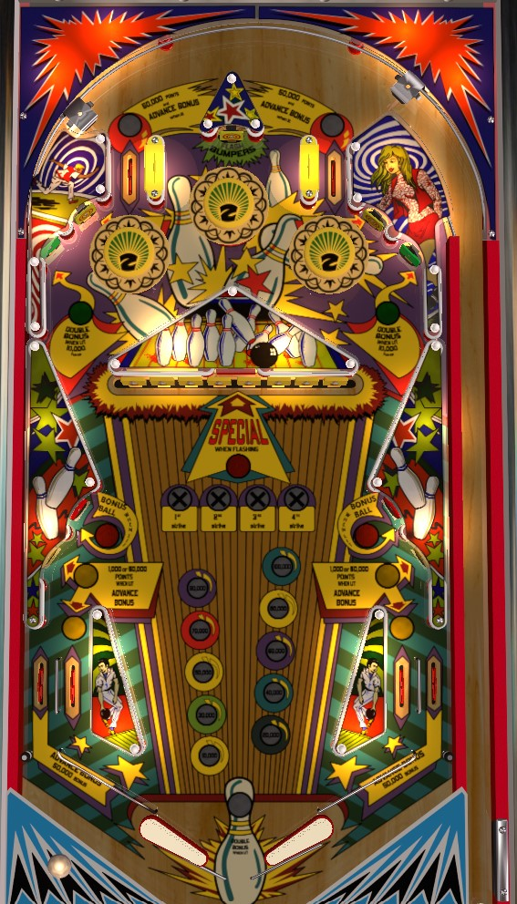

Not to be confused with Strikes and Spares (Bally, 1978), which is probably what you meant to click on.
Strike has both solid-state and electromechanical versions. This guide discusses the solid-state version only.
Shoot as many drop targets as you can, as safely as you can. At 50,000 points per target, no other scoring in the game even remotely compares. Since many of the targets are placed in a perilous central position, consider backhanding targets as frequently as possible. A maximum double bonus only scores 200,000 points, which is not meaningful; hitting the center standup target above the bumpers causes the bumpers to flash for 10,000 per hit for the rest of the ball, but it's very difficult to get the ball to stay anywhere near the top of the playfield after the initial plunge.
When the start button is pressed, the game will "randomly" pick a number from 1,000,000 to 9,000,000 in multiples of 1,000,000 and light it up on the top left of the backglass. I believe that all this value indicates is the score at which the biri-biri will be played, which is a loud repetitive victory jingle used in European pinball machines to announce that a player performed well enough to win a free drink. The first game played after the machine is powered on seems to always give a selected score of 8,000,000 or 9,000,000, though after that it can move in either direction; I've never seen a number lower than 3,000,000 be chosen, though.
There are two top lanes on the far left and right; one of the two will always be lit. Lit lane scores 50,000 points and a bonus advance; unlit lane scores 3,000 points and no bonus. Which lane is lit alternates each time a 100-point switch is scored, which includes the lower slingshots and the diagonal wall switches immediately left and right of the drop targets. Plunging into the lit top lane is optimal, especially since the pop bumper directly below the lane can give some up-and-down action and collect the 50,000 repeatedly.
A plunge that misses both these lanes descends into the pop bumpers from either side of the top triangle. Bumpers score 1,000 points when lit, or 10,000 points when flashing; the bumpers flash for the rest of the ball after the standup target on the bottom side of the top triangle is hit, which also scores 5,000 points on its own. While 10,000 point bumpers are tempting, it's very difficult to hit more than one pop bumper at a time after the initial plunge due to the table layout, so it's a little better to find the lit top lane and get the ball down the table at a controlled speed.
The most dangerous part of Strike is the ball's descent down the meat of the table. There are a significant number of angles off the diagonal wall switches on the sides that send the ball directly between the flippers. Get as much of a feel as you can for when you may need to nudge a ball off a side wall or perform a slap save just to get a flipper on a ball.
There are two standup targets on each side. The lower/outer target in each pair can be lit green; hitting it when lit green awards 10,000 points and double bonus for that ball. The upper/inner target in each pair alternates which lower target is lit green, and advances the bonus; in Magic Pixel's virtual recreation, these targets score 1,000 points, but in JPSalas' VPX recreation, they score 50,000 points, and I am not sure which is correct or if a setting governs their value. Due to the target's proximity to a pop bumper, the 1,000 points seems much more plausible.
Each drop target down scores 50,000 points, which is far and away the most valuable scoring option in the game. Clearing the entire bank of 8 drop targets awards a Strike, which lights the red standup target on the left for an extra ball. (I have never seen the right red standup target light for extra ball, but supposedly it can; perhaps this is a game setting.) After the first 3 strikes, the center drop targets reset immediately. After the 4th strike, a standup target behind the drop targets will be lit for a red Special, which traditionally scores a free game, though other awards may be available. Hitting the target behind the drops when it is not lit, i.e. when other drop targets are still standing, scores 50,000 points only.
In my experience, there is a maximum of one extra ball per ball in play, so if you've already collected a bonus ball, it may be worth intentionally draining the ball with 1 drop target remaining to collect your bonus and easily light another extra ball; otherwise, you risk "wasting" a possible extra ball by completing the drop targets twice in the same turn. Being a single-player game, drop target progress does carry over between balls. As an Italian-manufactured game, though, I would expect Strike to have some add-a-ball settings, allowing multiple extra balls (perhaps up to 5) to be earned and queued at once.
Since the drop targets directly face the flippers and center drain, take care to shoot them in safe, smart ways. All drop targets should be able to be hit from either flipper, and I tend to have the most success backhanding targets as much as possible, though preferences on this matter may vary machine-by-machine based on flipper strength, table angle, possible lean, etc. If you are able to practice Strike and gain an idea of what to do or not to do, taking that opportunity is recommended.
At any given time, either the two lower yellow standup targets or the two in lanes will be lit. These switches score 50,000 points and a bonus advance when lit, but just 1,000 points and no bonus when not lit. Like the top lanes, 100-point switches alternate which features are lit.
Strike has a conventional in/out lane setup. In addition to the in lane values mentioned above, out lanes always score 50,000 points and a bonus advance. The in lane rail is cut off near the bottom corners of the table, allowing a ball to roll up the flipper in lane and fall into the drain, while also allowing a ball in the out lane to be nudged off a post and back into the in lane. This flipper setup was used on at least one side in several Gottlieb games of the mid-to-late-1970s such as 300, Centigrade 37, and Jacks Open. Just like in those games, be sure when playing Strike to get the ball under control with live catches, drop catches, or dead bounces, rather than simply holding the flipper up to hope for a basic trap and risk the ball rolling backwards and falling out of the in lane.
Each bonus advance on Strike is worth 10,000 points toward the end of ball bonus, rather than the traditional 1,000. Bonus is advanced by lit top lanes, top standup targets labelled Advance Bonus, lit lower yellow standup targets, lit in lanes, and any out lane. Bonus is doubled by hitting the top standup target that is lit green. Max bonus is 2x 100,000 = 200,000 points- nothing to sneeze at, but still somewhat outpaced by skilled, smart drop target shooting. There is no mid ball bonus collect or any kind of bonus hold over. Double bonus is not given for free on any ball. The first bonus advance is also never given for free, so it is possible to drain and score 0 points in the bonus.